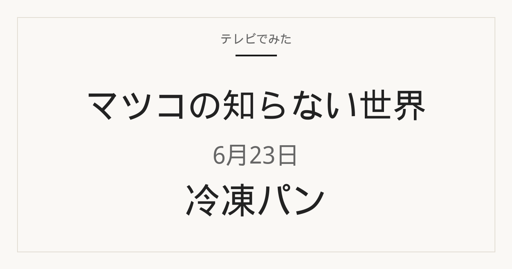

マツコの知らない世界 冷凍パン｜2026年6月23日

2026年6月23日放送の「マツコの知らない世界」では、お取り寄せ冷凍パンの世界を特集。年間1000個以上のパンを食べる主婦として、ニシノカオリさんが登場しました。TBS公式アーカイブでは、育児や家事が大変な中でお取り寄せ冷凍パンに救われた経緯と、人気ベーカリーからスーパーの冷凍パンまでが一挙に紹介されたと案内されています。
この記事はTBS公式の放送アーカイブを基準に、番組で紹介された商品名と放送時点の価格を確認しています。掲載するのは、公式アーカイブで確認できた商品のうち、楽天市場で同一商品を確認できた2点です。店頭や通販では在庫切れ、販売終了、仕様・価格変更の場合があります。楽天市場ではセット販売や送料により放送時点の価格と異なることがあるため、数量と総額をご確認ください。

放送時価格 2,008円〜（TBS公式）
ロバのパン工房
1．冷凍蒸しパン 6個入り
TBS公式では「冷凍蒸しパン 6個入り」として紹介された、電子レンジや蒸し器で温めて食べる冷凍の蒸しパンです。楽天市場の同一商品ページでは、6種類を1袋にまとめたセットと案内されています。焼いて食べるパンではなく、蒸して食べるタイプの冷凍パンとして使う商品です。
向いている用途：朝やおやつに、冷凍庫から出して短時間で温めたいときに候補になります。1袋6個なので、家族で分けたり、数日に分けて使ったりしやすい数量です。
選ぶポイント：同じ店でも個数違いの袋があるため、「6個入り」であることを確認してください。販売ページの原材料欄では味ごとに小麦のほか、一部に卵・乳成分を含む記載があります。特定の味だけ欲しい場合は、アソートセットかどうかも見てください。
使用時の注意：販売ページでは、大袋から取り出して電子レンジで1分20〜30秒、または蒸し器で15分蒸す案内があります。温め時間は機種や個数で変わるため、パッケージ表示に従ってください。アレルギー原材料と保存方法も表示の確認が必要です。
楽天で見る

放送時価格 1,180円（TBS公式）
花畑牧場
2．北海道 十勝 コーンパン 5個入り
TBS公式では「北海道 十勝 コーンパン 5個入り」として紹介されました。メーカー公式では、内容量5個の冷凍パンで、仕込み時に北海道十勝産スーパースイートコーンを29％使った商品と案内されています。公式オンラインショップの案内では、北海道産小麦粉と十勝のとうもろこしを使ったコーンパンです。
向いている用途：とうもろこし入りの冷凍パンを、朝食やおやつ用にまとめ買いしたいときに候補になります。公式では解凍してそのまま食べられると案内されており、加熱調理が必須の生地キットではありません。
選ぶポイント：同じ花畑牧場でも入数違いやチーズ入りなど別商品があります。番組で紹介されたのは「北海道 十勝 コーンパン」の5個入りです。TBS公式には、店舗や時期により価格・取り扱い・パッケージが異なる注記もあります。
使用時の注意：公式の保存方法は−18℃以下の冷凍です。原材料表示では小麦・卵・乳成分・大豆・鶏肉を含むと案内されています。温め方や解凍方法はパッケージ表示に従ってください。通販では送料やセット単位で総額が変わることがあります。
楽天で見る
目的別に選ぶならどれ？
蒸して温めるパンを探している
「冷凍蒸しパン 6個入り」は、焼いて食べるパンではなく、電子レンジや蒸し器で温める蒸しパンです。トースター前提のパンを探している場合は合いません。
とうもろこし入りのパンを用意したい
「北海道 十勝 コーンパン 5個入り」は、メーカー公式でも十勝産のとうもろこしを使ったコーンパンとして案内されています。蒸しパンではなく、解凍して食べる冷凍パンです。
1袋の個数で選びたい
蒸しパンは6個入り、コーンパンは5個入りです。同じ店の別入数やセット販売と取り違えないよう、個数を確認してから選んでください。
まず公式の温め方を確認したい
蒸しパンは販売ページで電子レンジまたは蒸し器の案内があります。コーンパンは公式で「解凍してそのまま」と案内されています。どちらも最終的な温め方はパッケージ表示が基準です。
よくある質問
マツコの知らない世界で紹介された冷凍パンはどれ？
2026年6月23日の放送では、お取り寄せ冷凍パンの世界が特集されました。この記事では、TBS公式の放送アーカイブで確認できた商品のうち、楽天市場で同一商品を確認できた2点をまとめています。
マツコの知らない世界 冷凍パンの放送日は？
2026年6月23日（火）放送のマツコの知らない世界です。テーマはお取り寄せ冷凍パンの世界でした。
放送時点の価格はいくら？
TBS公式アーカイブでは、ロバのパン工房の冷凍蒸しパン6個入りが2,008円〜、花畑牧場の北海道十勝コーンパン5個入りが1,180円です。現在の価格や取り扱いは販売ページでご確認ください。
楽天市場でも同じ価格で買える？
同じとは限りません。楽天市場では複数個セットで販売され、商品代とは別に送料がかかる場合もあります。店頭購入と通販で使い分けてください。
出典と確認方法
番組名、放送日、紹介された商品名、放送時点の価格はTBS公式アーカイブを基準に確認しました。用途と選び方は、効果を断定しないよう公開情報をもとに編集部で整理しています。
商品リンクには広告リンクを含みます。番組映像や字幕は転載せず、公開情報をもとに独自に要約しています。